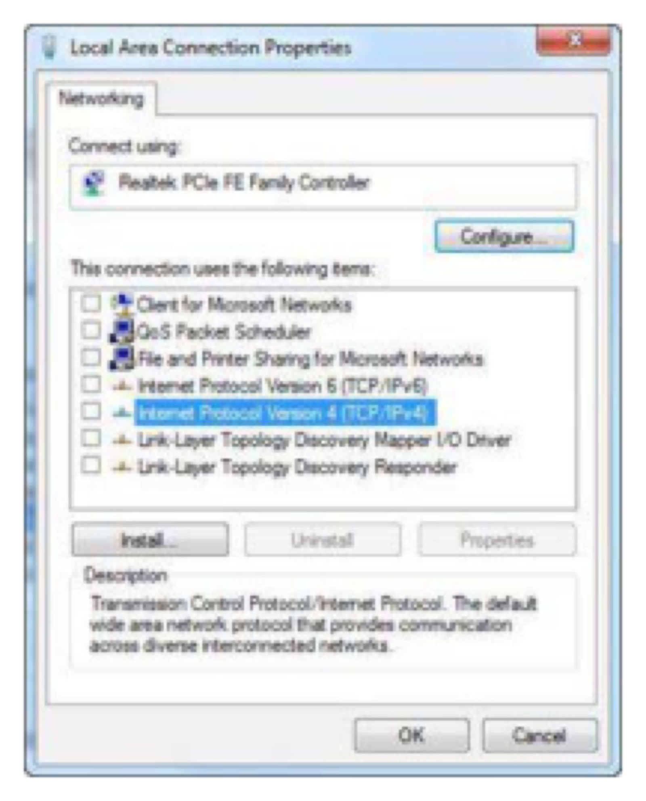
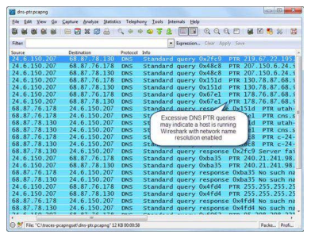
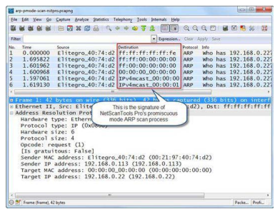
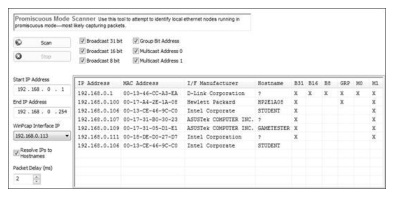
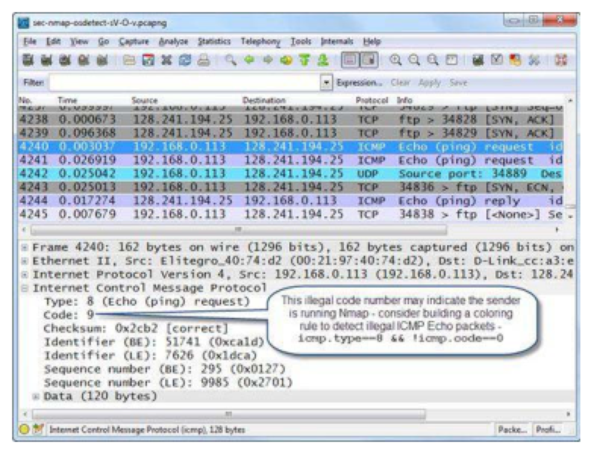

Wireshark Network Analysis 2nd Ed · Laura Chappell
Evidence in the packets — if you know where to look.
Evidence preservation, chain of custody, session reconstruction, and attacker identification from network captures.
No questions yet.
No notes yet.
💡THINK FIRST · NETWORK FORENSICS OVERVIEW
Network forensics differs from live network troubleshooting in one critical way. What is it, and how does it change how you approach a capture file?
HINT
Think about the difference between fixing a problem vs. proving what happened.
MODEL ANSWER
In troubleshooting, you care about fixing the problem. In forensics, you care about preserving evidence, establishing facts, and potentially presenting findings in a legal proceeding. Every analysis decision must be defensible: why did you filter that way? How do you know the timestamp is accurate? Has the evidence been altered? Forensic analysis requires documenting your methodology, preserving original captures as read-only, and working on copies. The standard of 'I think that's what happened' is replaced by 'here is the documented evidence'.
Network Forensics Overview
Network forensics is the capture, recording, and analysis of network traffic for the purpose of investigating incidents, breaches, and crimes. Unlike performance troubleshooting, forensic analysis must meet evidentiary standards.
Key Differences from Troubleshooting
Evidence preservation — original captures must be preserved intact and unmodified
Chain of custody — documentation of who handled the evidence and when
Defensible methodology — every analysis step must be reproducible and explainable
Legal implications — findings may be presented in court or regulatory proceedings
LEGAL CAUTIONCapturing network traffic may be subject to legal restrictions in your jurisdiction. Always have written authorization before capturing. In the US, unauthorized interception may violate the Electronic Communications Privacy Act (ECPA) or Computer Fraud and Abuse Act (CFAA).
🧠
MENTAL NOTE
Network forensics: evidence must be preserved, chain of custody documented, methodology defensible. Never analyze original captures — always work on copies. Preserve MD5/SHA hash of originals. pcapng format preserves timestamps and metadata. Written authorization required before capturing.

📷Figure 353 — open trace file to view
Figure 353. Wireshark can still capture traffic when the TCP/IP stacks are disabled
Ask a Question
Add a Note
💡THINK FIRST · EVIDENCE PRESERVATION
Before analyzing a forensic capture, what three steps should you always take to protect the evidence?
HINT
Think about how to prove later that the evidence was not altered during analysis.
MODEL ANSWER
(1) Hash the original file immediately: compute MD5 and SHA-256 hashes and record them. Any later modification changes the hash, proving tampering. (2) Write-protect the original: set the file to read-only or copy it to write-once media. Never analyze the original directly. (3) Document chain of custody: record who captured it, when, with what tool, from what interface, and how the file was transported. This paper trail is essential if the evidence is challenged.
Evidence Preservation and Chain of Custody
Hashing for Integrity
Immediately hash the original capture file:
md5sum capture.pcapng > capture.pcapng.md5
sha256sum capture.pcapng > capture.pcapng.sha256
Store the hash files separately. After analysis, re-hash to confirm the original was not modified.
Chain of Custody Documentation
Document for each evidence file:
Date and time of capture
Who captured it (name, title, contact)
Capture tool and version
Interface and location (which switch port, which segment)
Storage and transport method
Every person who accessed the file and when
pcapng for Forensics
Use pcapng format — it preserves interface names, OS capture timestamps, and supports capture-level comments documenting methodology. Never convert to pcap during forensic analysis (it discards metadata).
NEVER MODIFY ORIGINALNever open the original capture file with 'Enable editing' or save over it. Always work on a copy. If Wireshark asks to save changes to the original, cancel and make a copy first.
🧠
MENTAL NOTE
Forensic evidence steps: (1) hash immediately (MD5 + SHA-256); (2) write-protect original; (3) work only on copies; (4) document chain of custody (who, what, when, where, how). pcapng preserves metadata. Re-hash after analysis to prove original was unchanged.

📷Figure 352 — open trace file to view
Figure 352. Wireshark may generate PTR queries when network name resolution is enabled

📷Figure 355 — open trace file to view
Figure 355. This promiscuous mode scan uses ARP variations Handle Evidence Properly Handling of evidence should not alter or cause concern regarding its integrity. Trace
Ask a Question
Add a Note
Session and Data Reconstruction
Reconstructing Sessions
Follow TCP Stream reconstructs complete application-layer exchanges. For forensics:
Reconstruct email sessions (SMTP/POP3/IMAP) to read email content
Reconstruct web sessions (HTTP) to see what pages were accessed and what forms were submitted
Reconstruct FTP sessions to see what files were transferred and their content
Extracting Files
File → Export Objects → HTTP (or FTP, SMB) extracts all transferred files. This can recover:
Documents exfiltrated via HTTP POST
Malware downloaded via HTTP
Files accessed via SMB file shares
Email attachments transferred via SMTP
Timeline Construction
Statistics → Conversations → sort by Start Time — builds a chronological timeline of all network activity. Cross-reference with absolute timestamps (View → Time Display Format → Date and Time) to correlate with system logs, authentication logs, and user reports.
KEY TECHNIQUEUse absolute timestamps (View → Time Display Format → Date and Time of Day) and correlate with system event logs, firewall logs, and authentication records to build a complete incident timeline. Network captures alone tell you WHAT was transmitted; system logs tell you WHO authorized it.
🧠
MENTAL NOTE
Forensic reconstruction: Follow TCP Stream for sessions, Export Objects for files, Statistics → Conversations sorted by Start Time for timeline. Correlate absolute timestamps with system/auth logs. Network captures = what was sent; system logs = who initiated it.
Ask a Question
Add a Note
💡THINK FIRST · ATTACKER IDENTIFICATION
An attacker on the Internet has compromised a host. What information from a Wireshark capture can help identify the attacker, and what are the limitations of each?
HINT
IP addresses, port numbers, user-agents, tool signatures — what does each reveal and what can an attacker do to hide it?
MODEL ANSWER
Source IP: often the most direct identifier, but may be a VPN exit node, Tor exit node, or compromised host used as a relay (attribution challenge). Port numbers: attack tools often use characteristic ports (C2 beacons, specific malware ports). User-agent strings in HTTP: may reveal attacker's tool (curl, Python-requests, known exploit frameworks) — but easily faked. Payload signatures: exploit code, shellcode patterns, known malware family signatures in packet payloads — most reliable but requires pattern matching. MAC addresses: only valid for on-segment attackers (Layer 2); not visible across routers.
Attacker Identification Techniques
Source IP Analysis
Identify the attacker's IP(s) from Conversations — top talker that's not a known legitimate host
Cross-reference with threat intelligence (AbuseIPDB, VirusTotal, Shodan)
Limitation: source IPs may be spoofed, VPN exit nodes, Tor relays, or compromised hosts
Tool Fingerprinting
HTTP User-Agent header: http.user_agent — known scanner/exploit tool signatures
TCP options and window size patterns: OS fingerprinting (see Chapter 31)
Specific port patterns: known C2 frameworks use characteristic port combinations
Payload Analysis
Export Objects → HTTP to extract payloads
Follow TCP Stream to read commands in clear-text protocols
Search for known signatures: frame contains "cmd.exe" or frame contains "/bin/sh"
Submit extracted files to VirusTotal for malware family identification
MAC Address
Only useful if the attacker is on the same local segment. For remote attackers, only the last-hop router's MAC appears in the frame.
ATTRIBUTION LIMITATIONNetwork forensics can establish WHAT happened and WHEN. Definitively proving WHO (the human behind the keyboard) typically requires additional evidence: authentication logs, physical access records, ISP subscriber records. Network evidence is necessary but rarely sufficient alone for legal attribution.
🧠
MENTAL NOTE
Attacker identification: source IPs (Conversations), tool signatures (User-Agent, tcp.options), payload patterns (frame contains 'string'), OS fingerprinting (TCP options). Limitations: IPs may be spoofed/VPN, User-Agent easily faked. Network forensics proves WHAT happened; legal attribution requires ISP records and system logs.

📷Figure 354 — open trace file to view
Figure 354. shows the results of the NetScanTools’ Promiscuous Mode Scanner tool run against a network in search of a host running Wireshark or another packet capture tool.

📷Figure 356 — open trace file to view
Figure 356. Unusual traffic patterns may identify the tool used on the network Color Unusual Traffic Patterns In order to spot unusual traffic more efficiently, consi
Ask a Question
Add a Note
TL;DR — CHAPTER 30
Network forensics requires preserving evidence integrity (hash immediately, work on copies), documenting chain of custody, and using defensible methodology. Session reconstruction uses Follow TCP Stream and Export Objects. Timeline construction uses absolute timestamps + Conversations sorted by start time. Attacker identification from source IPs, tool signatures, and payload patterns — but attribution to a specific person usually requires additional non-network evidence.
Review Questions
Q30.1
What three steps should you take immediately when you receive a capture file as forensic evidence?
HINT
Think about integrity verification, protection from modification, and documentation.
ANSWER
(1) Hash the original file immediately using MD5 and SHA-256, and record the hashes with a timestamp. (2) Write-protect the original file (set read-only or copy to write-once media). (3) Document the chain of custody: who captured it, when, with what tool, from what interface, and how it was transferred to you. Only work on copies, never the original. Re-hash the original after your analysis to confirm it was not altered.
Q30.2
Why is pcapng format preferred over pcap for forensic captures?
HINT
What metadata does pcapng preserve that pcap does not?
ANSWER
pcapng preserves: interface names (which interface was captured), OS-level timestamps with higher precision, capture-level comments (who captured it, when, why, methodology notes), packet-level comments (analyst annotations), and multiple interface captures in one file. The pcap format stores only raw packets with minimal metadata — no comments, no interface details, no extended timestamps. In forensic contexts, this metadata becomes part of the evidence chain and may be required to establish authenticity and provenance.
Q30.3
How do you build a timeline of network activity from a Wireshark capture?
HINT
What Wireshark features help you establish when specific events occurred?
ANSWER
(1) View → Time Display Format → Date and Time of Day — all timestamps show as wall-clock time. (2) Statistics → Conversations → sort by Start Time — lists all conversations in chronological order with start and end times. (3) Set time references (Ctrl+T) on key event packets to measure durations. (4) Cross-reference with system logs, authentication records, and firewall logs using the absolute timestamps. IO Graphs with a 1-second interval shows traffic rate over time with spikes indicating events.
Q30.4
What Wireshark filter would you use to search the capture for packets containing the string '/bin/sh' in the payload?
HINT
Think about the frame.contains filter and what it searches.
ANSWER
frame contains "/bin/sh" — this searches all dissected and raw bytes in every packet for the string. The 'frame' qualifier means the entire frame (all layers). This would find shellcode, shell commands in HTTP requests, command injection attempts, reverse shell connections, or any clear-text payload containing this string. Also useful: frame contains "cmd.exe", frame contains "powershell", frame contains "wget".